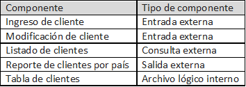
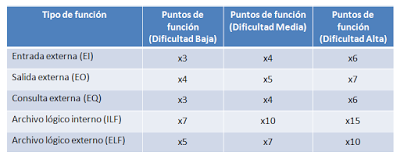
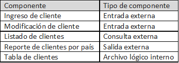
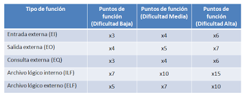

Identificar el número de componentes planteados
Es decir la funcionabilidad, debemos determinar tanto las transacciones de negocio como los componentes de datos

Ahora asignamos su grado de dificultad expuesto en la siguiente tabla es
relativo y a mayor complejidad mayor cantidad de puntos de función asignados.

NOTA:
REGRESAR

Ahora asignamos su grado de dificultad expuesto en la siguiente tabla es
relativo y a mayor complejidad mayor cantidad de puntos de función asignados.
NOTA:
REGRESAR